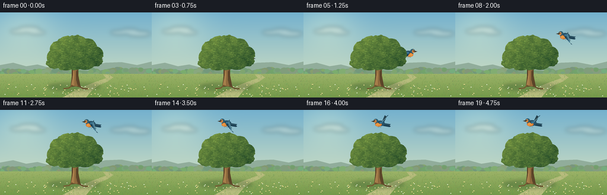
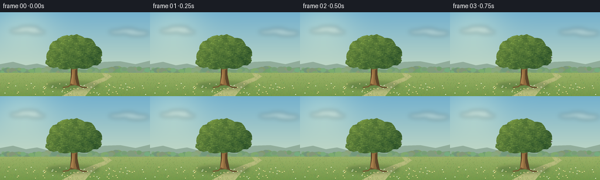

CODING AGENTS AS PIXEL WORLD MODELS
traex/GPT-6.1-Sol · dynamic_spatial_relationship_0051
点击播放 · 原生 RGB 像素
逐轮保存的候选
回放视频、检查图与代码变化。
每份候选均可单独播放。实际图片检查记录在下方工具轨迹中。
候选 01播放与检查图
点击播放 · 原生 RGB 像素

展开代码变化
--- 上一保存版本
+++ 本次保存版本
@@ -0,0 +1,158 @@
+from pathlib import Path
+import math, json
+import numpy as np
+from PIL import Image, ImageDraw, ImageFilter
+import artifact_io
+
+ROOT=Path(__file__).resolve().parent
+SPEC=json.loads((ROOT/'task_spec.json').read_text())
+W,H=SPEC['width'],SPEC['height']; S=4
+WW,HH=W*S,H*S
+rng=np.random.default_rng(31)
+
+def ellipse(d,box,fill): d.ellipse(tuple(int(v*S) for v in box),fill=fill)
+def poly(d,pts,fill): d.polygon([(int(x*S),int(y*S)) for x,y in pts],fill=fill)
+def line(d,pts,fill,width=1): d.line([(int(x*S),int(y*S)) for x,y in pts],fill=fill,width=max(1,int(width*S)),joint='curve')
+
+# A calm, sunlit meadow, with atmospheric perspective.
+y,x=np.mgrid[0:HH,0:WW]; yf=y/S; xf=x/S
+sky=np.zeros((HH,WW,3),float)
+t=np.clip(yf/135,0,1)
+for c,(a,b) in enumerate(zip((116,177,206),(220,229,192))): sky[:,:,c]=a+(b-a)*t
+sun=np.exp(-((xf-40)**2/2700+(yf-21)**2/1900))
+sky+=sun[:,:,None]*np.array([31,20,5])
+bg=Image.fromarray(np.uint8(np.clip(sky,0,255)),'RGB')
+cloud=Image.new('RGBA',bg.size); cd=ImageDraw.Draw(cloud)
+for cx,cy,r in [(33,32,16),(49,28,18),(62,34,15),(202,34,16),(218,31,15),(234,36,20)]:
+ ellipse(cd,(cx-r,cy-r*.23,cx+r,cy+r*.23),(255,249,228,67))
+cloud=cloud.filter(ImageFilter.GaussianBlur(3.5*S)); bg=Image.alpha_composite(bg.convert('RGBA'),cloud)
+d=ImageDraw.Draw(bg)
+poly(d,[(0,100),(0,89),(22,85),(44,91),(63,88),(90,95),(112,90),(146,92),(178,85),(205,84),(231,89),(256,83),(256,144),(0,144)],(145,173,155,255))
+poly(d,[(0,107),(0,99),(32,95),(51,99),(77,95),(102,103),(128,97),(160,100),(189,94),(221,98),(256,94),(256,144),(0,144)],(122,158,121,255))
+# Soft distant hedgerows.
+for i in range(110):
+ xx=rng.uniform(-5,263); yy=rng.uniform(97,107); rr=rng.uniform(2.5,7)
+ cc=(int(rng.integers(114,141)),int(rng.integers(150,175)),int(rng.integers(107,128)),255)
+ ellipse(d,(xx-rr,yy-rr*.8,xx+rr,yy+rr*.7),cc)
+# Ground gradient and a pale winding gap in the grass.
+ground=Image.new('RGBA',bg.size); gd=ImageDraw.Draw(ground)
+for yy in range(104*S,HH):
+ p=(yy/S-104)/40
+ col=(int(156-40*p),int(179-26*p),int(104-30*p),255)
+ gd.line([(0,yy),(WW,yy)],fill=col)
+poly(gd,[(174,105),(184,105),(191,110),(181,117),(167,123),(155,132),(145,144),(105,144),(132,129),(157,119),(179,111)],(183,188,125,255))
+bg=Image.alpha_composite(bg,ground)
+# Meadow shading, the tree's ground shadow, and scattered fine grass.
+shade=Image.new('RGBA',bg.size); sd=ImageDraw.Draw(shade)
+ellipse(sd,(80,119,170,132),(39,77,39,85)); ellipse(sd,(105,121,153,128),(33,64,27,60))
+shade=shade.filter(ImageFilter.GaussianBlur(3*S)); bg=Image.alpha_composite(bg,shade)
+d=ImageDraw.Draw(bg)
+for i in range(1850):
+ xx=rng.uniform(0,256); yy=rng.uniform(105,147)
+ ht=rng.uniform(.4,2.1)*(0.5+(yy-103)/33)
+ c=tuple(int(v) for v in (rng.uniform(84,144),rng.uniform(130,167),rng.uniform(60,94)))+(rng.integers(70,180).item(),)
+ line(d,[(xx,yy),(xx+rng.uniform(-.8,.8),yy-ht)],c,.25)
+for i in range(75):
+ xx=rng.uniform(5,250); yy=rng.uniform(124,145)
+ line(d,[(xx,yy),(xx-.4,yy-2.4)],(83,128,64,255),.3)
+ ellipse(d,(xx-1,yy-3.1,xx+.8,yy-1.9),(236,220,147,255) if i%3 else (226,236,207,255))
+
+# The tree is a separate foreground layer, genuinely occluding the bird.
+tree=Image.new('RGBA',bg.size); td=ImageDraw.Draw(tree)
+poly(td,[(119,126),(121,108),(121,95),(117,81),(111,72),(116,69),(123,84),(126,86),(130,73),(135,69),(132,87),(132,107),(136,127),(128,125)],(91,67,40,255))
+poly(td,[(120,124),(123,108),(123,93),(119,81),(116,76),(120,79),(128,90),(128,114),(131,125)],(145,107,62,255))
+poly(td,[(120,123),(123,106),(124,95),(125,105),(125,123)],(173,130,77,255))
+for pts in [[(124,98),(122,90),(112,86),(101,76)],[(129,99),(136,86),(149,80),(154,73)],[(125,91),(130,74),(125,61)],[(123,84),(115,69),(103,61)]]:
+ line(td,pts,(100,77,45,255),3)
+ line(td,[(a-0.7,b) for a,b in pts],(157,113,65,255),.8)
+for xx in [123,126,129,131]:
+ line(td,[(xx,123),(xx+.5,116),(xx-.6,109)],(91,67,43,200),.35)
+line(td,[(122,123),(116,128),(107,129)],(116,88,48,255),2)
+line(td,[(131,124),(141,129),(148,129)],(100,77,43,255),2)
+
+# Irregular layered crown: directional sunlight and fine organic foliage.
+mask=Image.new('L',bg.size); md=ImageDraw.Draw(mask)
+lobes=[(94,76,15,15),(100,62,16,14),(113,52,15,12),(129,52,19,13),(147,59,16,15),(159,70,15,13),(159,81,13,10),(143,83,19,14),(127,85,17,12),(111,85,18,13),(91,85,12,10),(126,66,33,21)]
+for cx,cy,rx,ry in lobes: ellipse(md,(cx-rx,cy-ry,cx+rx,cy+ry),255)
+# Small peripheral lobes prevent an artificial smooth silhouette.
+for i in range(135):
+ cx,cy,rx,ry=lobes[int(rng.integers(len(lobes)))]; a=rng.uniform(0,2*math.pi)
+ px=cx+rx*.88*math.cos(a); py=cy+ry*.86*math.sin(a); r=rng.uniform(1.7,3.7)
+ ellipse(md,(px-r,py-r*.8,px+r,py+r*.8),255)
+noise=Image.fromarray(np.uint8(rng.uniform(0,255,(30,48)))).resize(bg.size,Image.Resampling.BICUBIC)
+nn=np.asarray(noise)/255
+light=np.clip(.77-(xf-95)*.005-(yf-48)*.007+nn*.27+.06*np.sin(xf*.21)*np.cos(yf*.20),0,1)
+arr=np.zeros((HH,WW,4),np.uint8)
+for c,(lo,hi) in enumerate([(30,113),(70,143),(40,62)]):arr[:,:,c]=np.uint8(lo+(hi-lo)*light)
+arr[:,:,3]=np.asarray(mask)
+fol=Image.fromarray(arr,'RGBA')
+fd=ImageDraw.Draw(fol)
+for i in range(1950):
+ px=rng.uniform(78,175); py=rng.uniform(39,100)
+ ix=int(px*S); iy=int(py*S)
+ if mask.getpixel((ix,iy))==0:continue
+ ll=float(light[iy,ix]); v=rng.uniform(-18,23)
+ color=(int(np.clip(32+83*ll+v,0,255)),int(np.clip(70+79*ll+v,0,255)),int(np.clip(36+31*ll+v*.42,0,255)),255)
+ r=rng.uniform(.45,1.6)
+ ellipse(fd,(px-r,py-r*.42,px+r,py+r*.42),color)
+ if i%4==0:line(fd,[(px-r*.7,py-.1),(px+r*.6,py-.3)],(min(255,color[0]+22),min(255,color[1]+15),color[2],255),.18)
+fol.putalpha(mask)
+tree=Image.alpha_composite(tree,fol)
+
+# Bluebird, with individual primary feathers and a warmly lit orange chest.
+def bird(cx,cy,phase,facing=1,idle=False):
+ im=Image.new('RGBA',bg.size); bd=ImageDraw.Draw(im)
+ def p(points,col):poly(bd,[(cx+facing*a,cy+b) for a,b in points],col)
+ def l(points,col,w=.5):line(bd,[(cx+facing*a,cy+b) for a,b in points],col,w)
+ def e(box,col):
+ x0,y0,x1,y1=box
+ if facing==-1:x0,x1=-x1,-x0
+ ellipse(bd,(cx+x0,cy+y0,cx+x1,cy+y1),col)
+ flap=math.sin(phase)
+ if idle:flap=.7
+ # Far wing gives depth to the flight silhouette.
+ tipy=-4-12*flap; tipx=-9-5*(1-abs(flap))
+ p([(-3,-2),(-5,-6),(tipx+3,tipy-2),(tipx,tipy),(tipx+1,tipy+3),(-5,2),(2,1)],(37,66,78,255))
+ # Slightly fanned tail, and compact rounded body.
+ p([(-5,0),(-18,2),(-16,4),(-18,5.5),(-16,6.8),(-5,5)],(29,65,84,255))
+ l([(-16,3),(-7,2)],(111,158,162,255),.45)
+ e((-8,-4.2,8,5.5),(39,81,103,255))
+ e((-3,-.5,8.1,6),(213,119,49,255))
+ e((-.8,.3,7,5.3),(235,150,65,255))
+ e((3,-7.1,11,-.2),(47,94,114,255))
+ e((6,-5.9,10.5,-.3),(216,133,64,255))
+ p([(10,-4.1),(15,-2.8),(10,-1.5)],(60,51,37,255))
+ e((7.7,-5,9.6,-3.1),(20,29,28,255));e((8,-4.8,8.6,-4.2),(247,247,221,255))
+ l([(1,4.3),(0,7.1),(-2,7.8)],(76,58,37,255),.45)
+ l([(3,4.2),(2,6.8),(4,7)],(76,58,37,255),.4)
+ # Near wing sweeps up/down around its shoulder. Feathered trailing edge.
+ ty=-2-17*flap; tx=-11-5*(1-abs(flap))
+ sign=-1 if flap>=0 else 1
+ if idle: tx,ty=-9,1
+ pts=[(1,-2),(-4,-4),(tx+3,ty-sign*2),(tx,ty)]
+ for j in range(6):
+ u=j/5
+ ax=tx+(12)*u; ay=ty*(1-u)+1.5*u
+ pts.extend([(ax-1.1,ay+sign*1.5),(ax+1.4,ay+sign*.1)])
+ pts.extend([(0,2),(3,-.5)])
+ p(pts,(26,62,83,255))
+ p([(1,-2),(-4,-3),(tx+2,ty*.76),(tx+4,ty*.75+1),(-3,1),(1,1)],(57,112,140,255))
+ for j in range(4):
+ u=.15+j*.18
+ l([(-3,-1),(tx+12*u,ty*(1-u)+1.5*u)],(100,151,167,255),.45)
+ l([(-4,-3),(tx+2,ty*.8)],(139,179,177,255),.6)
+ return im
+
+positions=[(159,82),(159,82),(159.4,81.8),(160,81),(167,77),(177,69),(184,59),(188,49),(185,39),(177,31),(166,26),(153,23),(140,22),(129,22),(126,22),(127,21.5),(129,22.2),(128,21),(127,22),(129,21.5)]
+frames=[]
+for i,(bx,by) in enumerate(positions):
+ frame=bg.copy()
+ direction=1 if i<8 else -1
+ b=bird(bx,by,i*2*math.pi*1.35/4,direction,i<4)
+ # Tree remains in front of the bird until it has cleared the crown.
+ frame=Image.alpha_composite(frame,b)
+ frame=Image.alpha_composite(frame,tree)
+ frame=frame.convert('RGB').resize((W,H),Image.Resampling.LANCZOS)
+ frames.append(np.asarray(frame,dtype=np.uint8))
+artifact_io.save(np.stack(frames),ROOT)
+print('Saved',len(frames),'RGB frames',frames[0].shape)
候选 02播放与检查图
点击播放 · 原生 RGB 像素

展开代码变化
--- 上一保存版本
+++ 本次保存版本
@@ -143,7 +143,7 @@
l([(-4,-3),(tx+2,ty*.8)],(139,179,177,255),.6)
return im
-positions=[(159,82),(159,82),(159.4,81.8),(160,81),(167,77),(177,69),(184,59),(188,49),(185,39),(177,31),(166,26),(153,23),(140,22),(129,22),(126,22),(127,21.5),(129,22.2),(128,21),(127,22),(129,21.5)]
+positions=[(165,83),(165,83),(165.3,82.7),(165.8,81.5),(170,77),(177,69),(184,59),(188,49),(185,39),(177,31),(166,26),(153,23),(140,22),(129,22),(126,22),(127,21.5),(129,22.2),(128,21),(127,22),(129,21.5)]
frames=[]
for i,(bx,by) in enumerate(positions):
frame=bg.copy()
候选 03播放与检查图
可观测工具轨迹
实际执行的命令与返回图片。
命令 1exit 0
/bin/bash -lc 'ls -la && cat prompt.txt && cat GENERATION_RULES.md && cat task_spec.json'
命令 2exit 0
/bin/bash -lc "cat artifact_io.py && python - <<'PY'
import PIL,numpy
print('PIL',PIL.__version__)
PY"命令 3exit 0
/bin/bash -lc "cat > generate.py <<'PY'
from pathlib import Path
import math, json
import numpy as np
from PIL import Image, ImageDraw, ImageFilter
import artifact_io
ROOT=Path(__file__).resolve().parent
SPEC=json.loads((ROOT/'task_spec.json').read_text())
W,H=SPEC['width'],SPEC['height']; S=4
WW,HH=W*S,H*S
rng=np.random.default_rng(31)
def ellipse(d,box,fill): d.ellipse(tuple(int(v*S) for v in box),fill=fill)
def poly(d,pts,fill): d.polygon([(int(x*S),int(y*S)) for x,y in pts],fill=fill)
def line(d,pts,fill,width=1): d.line([(int(x*S),int(y*S)) for x,y in pts],fill=fill,width=max(1,int(width*S)),joint='curve')
# A calm, sunlit meadow, with atmospheric perspective.
y,x=np.mgrid[0:HH,0:WW]; yf=y/S; xf=x/S
sky=np.zeros((HH,WW,3),float)
t=np.clip(yf/135,0,1)
for c,(a,b) in enumerate(zip((116,177,206),(220,229,192))): sky[:,:,c]=a+(b-a)*t
sun=np.exp(-((xf-40)**2/2700+(yf-21)**2/1900))
sky+=sun[:,:,None]*np.array([31,20,5])
bg=Image.fromarray(np.uint8(np.clip(sky,0,255)),'RGB')
cloud=Image.new('RGBA',bg.size); cd=ImageDraw.Draw(cloud)
for cx,cy,r in [(33,32,16),(49,28,18),(62,34,15),(202,34,16),(218,31,15),(234,36,20)]:
ellipse(cd,(cx-r,cy-r*.23,cx+r,cy+r*.23),(255,249,228,67))
cloud=cloud.filter(ImageFilter.GaussianBlur(3.5*S)); bg=Image.alpha_composite(bg.convert('RGBA'),cloud)
d=ImageDraw.Draw(bg)
poly(d,[(0,100),(0,89),(22,85),(44,91),(63,88),(90,95),(112,90),(146,92),(178,85),(205,84),(231,89),(256,83),(256,144),(0,144)],(145,173,155,255))
poly(d,[(0,107),(0,99),(32,95),(51,99),(77,95),(102,103),(128,97),(160,100),(189,94),(221,98),(256,94),(256,144),(0,144)],(122,158,121,255))
# Soft distant hedgerows.
for i in range(110):
xx=rng.uniform(-5,263); yy=rng.uniform(97,107); rr=rng.uniform(2.5,7)
cc=(int(rng.integers(114,141)),int(rng.integers(150,175)),int(rng.integers(107,128)),255)
ellipse(d,(xx-rr,yy-rr*.8,xx+rr,yy+rr*.7),cc)
# Ground gradient and a pale winding gap in the grass.
ground=Image.new('RGBA',bg.size); gd=ImageDraw.Draw(ground)
for yy in range(104*S,HH):
p=(yy/S-104)/40
col=(int(156-40*p),int(179-26*p),int(104-30*p),255)
gd.line([(0,yy),(WW,yy)],fill=col)
poly(gd,[(174,105),(184,105),(191,110),(181,117),(167,123),(155,132),(145,144),(105,144),(132,129),(157,119),(179,111)],(183,188,125,255))
bg=Image.alpha_composite(bg,ground)
# Meadow shading, the tree's ground shadow, and scattered fine grass.
shade=Image.new('RGBA',bg.size); sd=ImageDraw.Draw(shade)
ellipse(sd,(80,119,170,132),(39,77,39,85)); ellipse(sd,(105,121,153,128),(33,64,27,60))
shade=shade.filter(ImageFilter.GaussianBlur(3*S)); bg=Image.alpha_composite(bg,shade)
d=ImageDraw.Draw(bg)
for i in range(1850):
xx=rng.uniform(0,256); yy=rng.uniform(105,147)
ht=rng.uniform(.4,2.1)*(0.5+(yy-103)/33)
c=tuple(int(v) for v in (rng.uniform(84,144),rng.uniform(130,167),rng.uniform(60,94)))+(rng.integers(70,180).item(),)
line(d,[(xx,yy),(xx+rng.uniform(-.8,.8),yy-ht)],c,.25)
for i in range(75):
xx=rng.uniform(5,250); yy=rng.uniform(124,145)
line(d,[(xx,yy),(xx-.4,yy-2.4)],(83,128,64,255),.3)
ellipse(d,(xx-1,yy-3.1,xx+.8,yy-1.9),(236,220,147,255) if i%3 else (226,236,207,255))
# The tree is a separate foreground layer, genuinely occluding the bird.
tree=Image.new('RGBA',bg.size); td=ImageDraw.Draw(tree)
poly(td,[(119,126),(121,108),(121,95),(117,81),(111,72),(116,69),(123,84),(126,86),(130,73),(135,69),(132,87),(132,107),(136,127),(128,125)],(91,67,40,255))
poly(td,[(120,124),(123,108),(123,93),(119,81),(116,76),(120,79),(128,90),(128,114),(131,125)],(145,107,62,255))
poly(td,[(120,123),(123,106),(124,95),(125,105),(125,123)],(173,130,77,255))
for pts in [[(124,98),(122,90),(112,86),(101,76)],[(129,99),(136,86),(149,80),(154,73)],[(125,91),(130,74),(125,61)],[(123,84),(115,69),(103,61)]]:
line(td,pts,(100,77,45,255),3)
line(td,[(a-0.7,b) for a,b in pts],(157,113,65,255),.8)
for xx in [123,126,129,131]:
line(td,[(xx,123),(xx+.5,116),(xx-.6,109)],(91,67,43,200),.35)
line(td,[(122,123),(116,128),(107,129)],(116,88,48,255),2)
line(td,[(131,124),(141,129),(148,129)],(100,77,43,255),2)
# Irregular layered crown: directional sunlight and fine organic foliage.
mask=Image.new('L',bg.size); md=ImageDraw.Draw(mask)
lobes=[(94,76,15,15),(100,62,16,14),(113,52,15,12),(129,52,19,13),(147,59,16,15),(159,70,15,13),(159,81,13,10),(143,83,19,14),(127,85,17,12),(111,85,18,13),(91,85,12,10),(126,66,33,21)]
for cx,cy,rx,ry in lobes: ellipse(md,(cx-rx,cy-ry,cx+rx,cy+ry),255)
# Small peripheral lobes prevent an artificial smooth silhouette.
for i in range(135):
cx,cy,rx,ry=lobes[int(rng.integers(len(lobes)))]; a=rng.uniform(0,2*math.pi)
px=cx+rx*.88*math.cos(a); py=cy+ry*.86*math.sin(a); r=rng.uniform(1.7,3.7)
ellipse(md,(px-r,py-r*.8,px+r,py+r*.8),255)
noise=Image.fromarray(np.uint8(rng.uniform(0,255,(30,48)))).resize(bg.size,Image.Resampling.BICUBIC)
nn=np.asarray(noise)/255
light=np.clip(.77-(xf-95)*.005-(yf-48)*.007+nn*.27+.06*np.sin(xf*.21)*np.cos(yf*.20),0,1)
arr=np.zeros((HH,WW,4),np.uint8)
for c,(lo,hi) in enumerate([(30,113),(70,143),(40,62)]):arr[:,:,c]=np.uint8(lo+(hi-lo)*light)
arr[:,:,3]=np.asarray(mask)
fol=Image.fromarray(arr,'RGBA')
fd=ImageDraw.Draw(fol)
for i in range(1950):
px=rng.uniform(78,175); py=rng.uniform(39,100)
ix=int(px*S); iy=int(py*S)
if mask.getpixel((ix,iy))==0:continue
ll=float(light[iy,ix]); v=rng.uniform(-18,23)
color=(int(np.clip(32+83*ll+v,0,255)),int(np.clip(70+79*ll+v,0,255)),int(np.clip(36+31*ll+v*.42,0,255)),255)
r=rng.uniform(.45,1.6)
ellipse(fd,(px-r,py-r*.42,px+r,py+r*.42),color)
if i%4==0:line(fd,[(px-r*.7,py-.1),(px+r*.6,py-.3)],(min(255,color[0]+22),min(255,color[1]+15),color[2],255),.18)
fol.putalpha(mask)
tree=Image.alpha_composite(tree,fol)
# Bluebird, with individual primary feathers and a warmly lit orange chest.
def bird(cx,cy,phase,facing=1,idle=False):
im=Image.new('RGBA',bg.size); bd=ImageDraw.Draw(im)
def p(points,col):poly(bd,[(cx+facing*a,cy+b) for a,b in points],col)
def l(points,col,w=.5):line(bd,[(cx+facing*a,cy+b) for a,b in points],col,w)
def e(box,col):
x0,y0,x1,y1=box
if facing==-1:x0,x1=-x1,-x0
ellipse(bd,(cx+x0,cy+y0,cx+x1,cy+y1),col)
flap=math.sin(phase)
if idle:flap=.7
# Far wing gives depth to the flight silhouette.
tipy=-4-12*flap; tipx=-9-5*(1-abs(flap))
p([(-3,-2),(-5,-6),(tipx+3,tipy-2),(tipx,tipy),(tipx+1,tipy+3),(-5,2),(2,1)],(37,66,78,255))
# Slightly fanned tail, and compact rounded body.
p([(-5,0),(-18,2),(-16,4),(-18,5.5),(-16,6.8),(-5,5)],(29,65,84,255))
l([(-16,3),(-7,2)],(111,158,162,255),.45)
e((-8,-4.2,8,5.5),(39,81,103,255))
e((-3,-.5,8.1,6),(213,119,49,255))
e((-.8,.3,7,5.3),(235,150,65,255))
e((3,-7.1,11,-.2),(47,94,114,255))
e((6,-5.9,10.5,-.3),(216,133,64,255))
p([(10,-4.1),(15,-2.8),(10,-1.5)],(60,51,37,255))
e((7.7,-5,9.6,-3.1),(20,29,28,255));e((8,-4.8,8.6,-4.2),(247,247,221,255))
l([(1,4.3),(0,7.1),(-2,7.8)],(76,58,37,255),.45)
l([(3,4.2),(2,6.8),(4,7)],(76,58,37,255),.4)
# Near wing sweeps up/down around its shoulder. Feathered trailing edge.
ty=-2-17*flap; tx=-11-5*(1-abs(flap))
sign=-1 if flap>=0 else 1
if idle: tx,ty=-9,1
pts=[(1,-2),(-4,-4),(tx+3,ty-sign*2),(tx,ty)]
for j in range(6):
u=j/5
ax=tx+(12)*u; ay=ty*(1-u)+1.5*u
pts.extend([(ax-1.1,ay+sign*1.5),(ax+1.4,ay+sign*.1)])
pts.extend([(0,2),(3,-.5)])
p(pts,(26,62,83,255))
p([(1,-2),(-4,-3),(tx+2,ty*.76),(tx+4,ty*.75+1),(-3,1),(1,1)],(57,112,140,255))
for j in range(4):
u=.15+j*.18
l([(-3,-1),(tx+12*u,ty*(1-u)+1.5*u)],(100,151,167,255),.45)
l([(-4,-3),(tx+2,ty*.8)],(139,179,177,255),.6)
return im
positions=[(159,82),(159,82),(159.4,81.8),(160,81),(167,77),(177,69),(184,59),(188,49),(185,39),(177,31),(166,26),(153,23),(140,22),(129,22),(126,22),(127,21.5),(129,22.2),(128,21),(127,22),(129,21.5)]
frames=[]
for i,(bx,by) in enumerate(positions):
frame=bg.copy()
direction=1 if i<8 else -1
b=bird(bx,by,i*2*math.pi*1.35/4,direction,i<4)
# Tree remains in front of the bird until it has cleared the crown.
frame=Image.alpha_composite(frame,b)
frame=Image.alpha_composite(frame,tree)
frame=frame.convert('RGB').resize((W,H),Image.Resampling.LANCZOS)
frames.append(np.asarray(frame,dtype=np.uint8))
artifact_io.save(np.stack(frames),ROOT)
print('Saved',len(frames),'RGB frames',frames[0].shape)
PY
python generate.py
ls -lh pixels.npz index.html inspection.png frames/00.png"命令 4exit 0
/bin/bash -lc "python - <<'PY'
p='generate.py'
s=open(p).read().replace(\"positions=[(159,82),(159,82),(159.4,81.8),(160,81),(167,77)\",\"positions=[(165,83),(165,83),(165.3,82.7),(165.8,81.5),(170,77)\")
open(p,'w').write(s)
PY
python generate.py
python - <<'PY'
import numpy as np
from pathlib import Path
from PIL import Image
p=Path('.')
a=np.load(p/'pixels.npz')['pixels']
assert a.shape==(144,256,20)
assert len(list((p/'frames').glob('*.png')))==20
assert all(Image.open(p/'frames'/f'{i:02d}.png').mode=='RGB' for i in range(20))
print('Verified required output artifacts and all 20 RGB frames.')
PY"保存候选 3 份；完成命令 4 次；可验证图片返回 0 张。原始 API 响应与完整日志保留在本地。